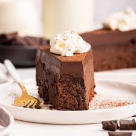

Flourless Chocolate Cake
Homepage
A flourless chocolate cake is perfect for someone who likes everything about cake...
except for the actual cake part. Oh, and it's perfect for those gluten intolerants.
Ingredients
- By now you've caught onto how I'm running this operation...
- There's no rhyme or reason for these recipes (if you can even call them recipes).
- But hey, I'm learning, I'm having fun, and at the end of the day, if we can't revel in the
day to day, then, what does that mean for the prosaic platitudes of our life?
- Now, I have no idea what that guy said but, he's clearly on some existential
over-intellectualisation...
- Good for him? (I guess)
Procedure
- Yeah, I'm doing this so I can practice having another ordered list done.
- Minimal actual lines, but hella actual practice of ts.
- Maybe I'm becoming more like a coder, given that the consensus from The Odin Project was That
coders are lazy. HAHAHAAHA
